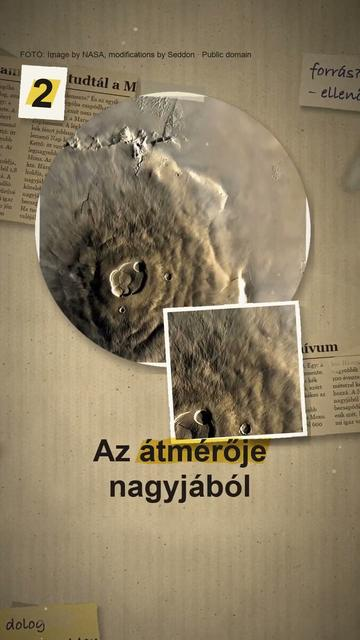

Megnézem a YouTube-on3 dolog, amit nem tudtál a Marsról
Röviden: A Marson a lemenő Nap körül kékes az ég: a légkör finom pora a kék fényt hatékonyabban engedi át, mint a hosszabb hullámhosszú színeket (a Curiosity marsjáró felvétele a Gale-kráterből, 2015; NASA).
A Marson a lemenő Nap körül kékes az ég: a légkör finom pora a kék fényt hatékonyabban engedi át, mint a hosszabb hullámhosszú színeket (a Curiosity marsjáró felvétele a Gale-kráterből, 2015; NASA). A Naprendszer legnagyobb vulkánja, az Olympus Mons a Marson áll: az átmérője nagyjából 600 km, a csúcskalderája 24 km-rel van a környező síkság felett (NASA). A Mars nagyobbik holdja, a Phobos 100 évente nagyjából 1,8 méterrel kerül közelebb a bolygóhoz; a NASA szerint nagyjából 50 millió év múlva becsapódik, vagy gyűrűvé esik szét (NASA).
Az összes rész forrásokkal: https://valoban.pages.dev/
Források
- NASA (2015): naplemente a Gale-kráterben
- NASA: Mars-tények (Olympus Mons)
- NASA Photojournal PIA02982: Olympus Mons
- NASA: Phobos
4 forrás · Hogyan ellenőrzünk?
Hibát találtál? Írd meg nekünk, megnézzük.
Képek és kreditek
• a Mars a Viking 1 felvételeiből (NASA/USGS) – NASA / USGS (see PIA04304 catalog page ), Public domain (https://creativecommons.org/publicdomain/mark/1.0/) https://commons.wikimedia.org/?curid=19400
• naplemente a Gusev-kráterben (Spirit, 2005; a színek kissé felerősítve, NASA) – NASA/JPL/Texas A&M/Cornell, Public domain (https://creativecommons.org/publicdomain/mark/1.0/) https://commons.wikimedia.org/?curid=291781
• naplemente a Gale-kráterben (Curiosity, 2015, NASA) – Mars Science Laboratory (MSL), Curiosity, MastCam, NASA/JPL-Caltech/MSSS/Texas A&M Univ., Public domain (https://creativecommons.org/publicdomain/mark/1.0/) https://commons.wikimedia.org/?curid=40405562
• az Olympus Mons a Viking-szondák felvételeiből (NASA) – NASA, modifications by Seddon, Public domain (https://creativecommons.org/publicdomain/mark/1.0/) https://commons.wikimedia.org/?curid=5551353
• az Olympus Mons Arizona államhoz mérve, azonos léptékben (LPI, NASA számára: Stephen Paul Meszaros) – Lunar and Planetary Institute from Houston, TX, USA, CC BY 2.0 (https://creativecommons.org/licenses/by/2.0/) https://commons.wikimedia.org/?curid=98866133
• a Phobos, a Mars nagyobbik holdja (HiRISE, 2008, NASA) – NASA / JPL-Caltech / University of Arizona, Public domain (https://creativecommons.org/publicdomain/mark/1.0/) https://commons.wikimedia.org/?curid=5191977
• a Phobos a Nap előtt (Perseverance, NASA) – NASA/JPL-Caltech/ASU/MSSS/SSI, Public domain (https://creativecommons.org/publicdomain/mark/1.0/) https://commons.wikimedia.org/?curid=198098448
• a Stickney-kráter a Phoboson (HiRISE, 2008, NASA) – NASA/JPL-Caltech/University of Arizona, Public domain (https://creativecommons.org/publicdomain/mark/1.0/) https://commons.wikimedia.org/?curid=6989373
A képek módosítva: 9:16-ra kivágva, átméretezve, kameramozgással, ráégetett felirattal.